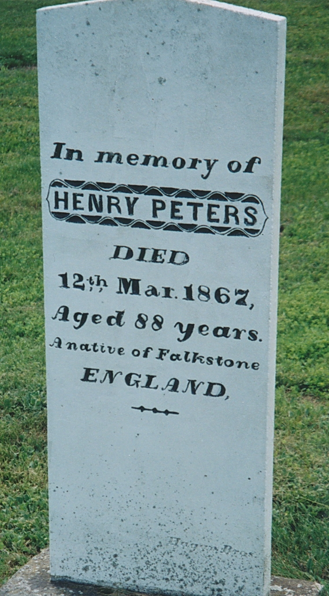
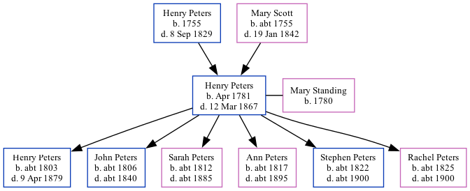

Henry Peters 1781 - 1867
[ Home ] | [ Calendar ] | [ Surnames Index ] | [ Family History ]The son of Henry Peters and Mary ScottHenry Peters, the four times great-uncle of Nigel Horne, was born in Folkestone, Kent, England in Apr 17811 and married Mary Standing (with whom he had 6 children: Henry Warman, John, Sarah Ann, Ann, Stephen and Rachel) at SS Mary & Eanswith in Folkestone on May 28, 18032.
Throughout his life, he lived in Richibucto, Kent, New Brunswick, Canada in 1861.
He died on Mar 12, 1867 in Richibucto and was buried there at Methodist Point Cemetery after Mar 12, 1867.
Parents
- Henry was born in 1755
- Mary was born c. 1755
Children
- Henry Warman was born c. 1803
- John was born c. 1806
- Sarah Ann was born c. 1812
- Ann was born c. 1817
- Stephen was born c. 1822
- Rachel was born c. 1825
Citations
- Canada Census 1861 - Findmypast (was the father of the head of the household)
- England, Select Marriages, 1538–1973 Ancestry.com Operations, Inc.
Media
Henry Peters - headstone

Canterbury Marriage Banns Transcription - GBPRS-CANT-M-94042429-1
Canterbury Marriages Transcription - GBPRS-CANT-M-97134970-1
England Marriages 1538-1973 Transcription - R_847837017
England Marriages 1538-1973 Transcription - R_848367121
England Marriages 1538-1973 - R_848366734
Canada Census 1861 - CAN/CENSUS/1861/02668132
Family Tree

Map
Generated by ged2site. Last updated on Feb 28, 2025